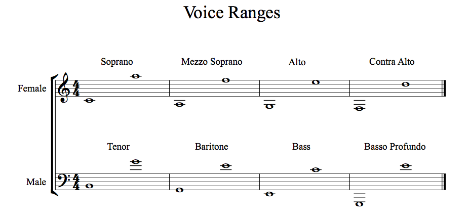

Na música ocidental, um coro misto (de vozes adultas, masculinas e femininas) compõe-se de quatro naipes: Baixos, Tenores, Contraltos e Sopranos; incluindo, algumas vezes, também as vozes intermédias: Barítono e Mezzo-soprano mais frequentemente ditas 2º Tenor e 2º Soprano, respectivamente.
Veja abaixo uma referência às vozes presentes, considerando, contudo, que estas são marcas excepcionais, bem acima da voz não educada (i.e treinada) e refletem os limites máximos possíveis somente de tal voz. Também, considere que este quadro não mostra a possibilidade do uso de falsetto que iria estender ainda mais a capacidade da altura destas vozes.
Contraltos: do Fa2 ao Fa4.
Mezzo (ou mezzo-soprano): do La2 ao La4.
Sopranos: do Do3 ao Do5.
Baixos: do Fa1 ao Fa3